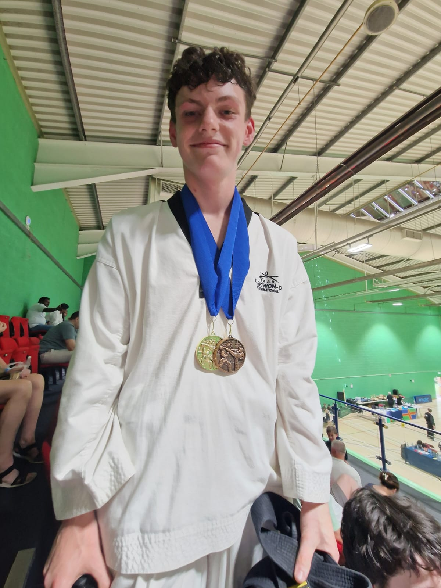
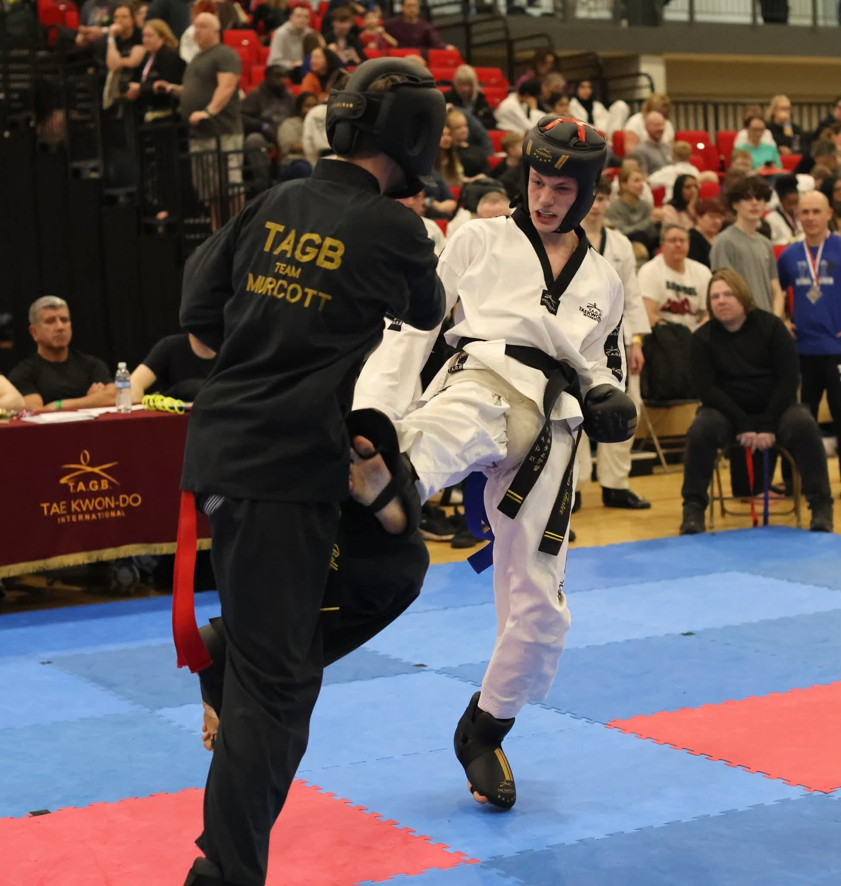
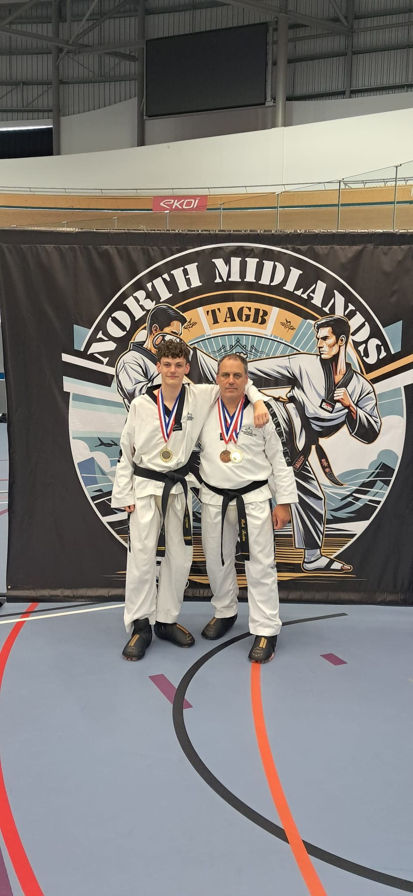
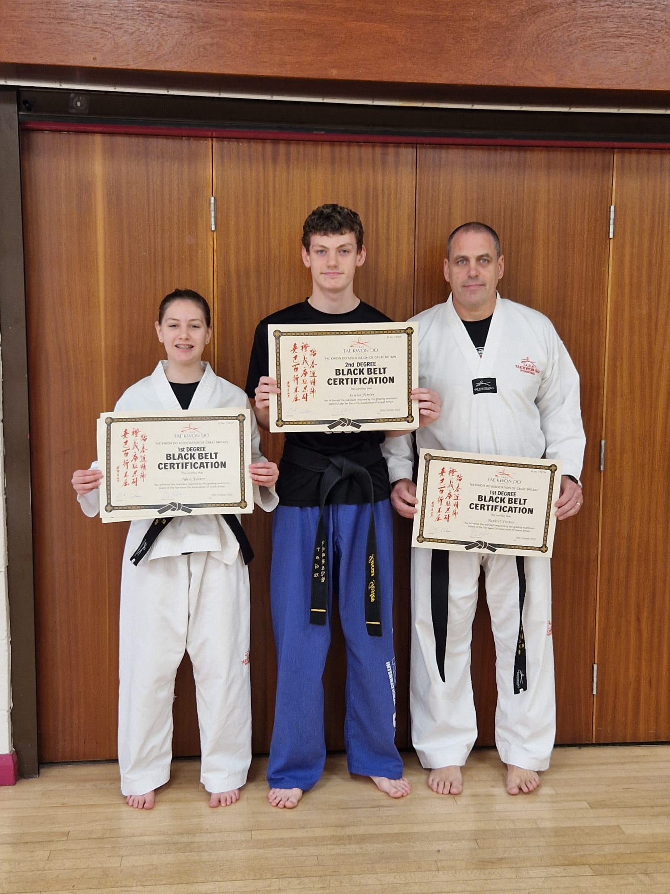

2nd Dan Black Belt · 11 Years Training · World Championship 3rd Place · Perseverance Personified
Meet Lucas Foster — 17 years old, 2nd Dan Black Belt, and one of the most accomplished competitors our dojang has ever produced. Lucas found our club through the website when he was just six years old, and something about it caught his eye. Eleven years later, he has grown into a formidable martial artist with a World Championship podium finish to his name.
Lucas's journey has not always been straightforward. He has trained through injury — including the challenge of maintaining consistency with a broken wrist — and yet he has never stopped pushing forward. That determination is the hallmark of a true martial artist, and it is exactly what earned him 3rd place at the World Championship, one of the highest achievements any student from our club has ever reached.
His favourite technique is the 540 turning kick — one of the most spectacular and technically demanding kicks in Taekwondo. His favourite pattern is Eui Am. His next goal is to achieve his 3rd Degree Black Belt. With the attitude and work ethic Lucas brings to every session, there is no doubt he will get there.
"It has to get harder to get easier."
— Lucas Foster, July 2026Click any photo to view full size




Lucas has been with us for eleven years — and watching him grow from a young boy into the competitor and martial artist he is today has been one of the genuine privileges of being an instructor. He came to us after finding the website and thinking it looked interesting. That curiosity turned into one of the most dedicated training journeys I have witnessed.
What makes Lucas stand out is not just his ability — it is his character. He trained through a broken wrist. He kept showing up. He kept competing. And when he stepped onto the world stage and came away with a podium finish, it was the result of years of exactly that kind of quiet, relentless perseverance.
His advice to new students — "it has to get harder to get easier" — is something I wish I could put on the wall of every dojang in the country. It is the truth of martial arts, and it is the truth of life. Lucas lives by it.
He has thanked his family for taking him everywhere — and I want to echo that. Behind every great student is a family that made it possible. And he has thanked me for believing in him. Lucas, the belief was never in question. It is my honour to name you our July 2026 Student Spotlight. Now go get that 3rd Dan.
Every Black Belt started as a beginner. Book your free taster session today and take the first step on your own Taekwondo journey.